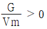
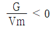
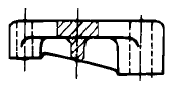
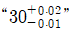
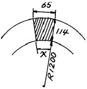

축로기능사 (2001-10-14 기출문제)
1과목: 임의구분
1. 용융금속이 주형에서 응고할 때 용융점이 내부로 전달되는 속도를 Vm 이라 하고 결정 입자성장속도를 G 라 하면 주상(columnar)결정입자가 생기기 위한 조건은?
- G ≥ Vm
- G ≤ Vm


(정답률: 알수없음)

2. 비중(specific gravity)이 가장 가벼운 금속은?
- Mg
- Cr
- Mn
- Pb
(정답률: 알수없음)
3. 면심입방격자의 표시는?
- FCC
- LPG
- CCP
- CDP
(정답률: 알수없음)
4. 산소와의 친화력이 가장 큰 것은?
- 은
- 금
- 백금
- 니켈
(정답률: 알수없음)
5. 경도시험법중에서 B 스케일, C 스케일이 있고 강구(Steel ball)와 다이아몬드 압입자를 사용하는 시험 방법은?
- 로크웰 경도시험법
- 비커스 경도시험법
- 브리넬 경도시험법
- 쇼어 경도시험법
(정답률: 알수없음)
6. 고급 주철의 인장강도(kgf/mm2)는 얼마 정도인가?
- 0 – 5
- 5 - 10
- 10 – 15
- 30 이상
(정답률: 알수없음)
7. 탄소 0.1%, 크롬 18%, 니켈 8% 나머지 철을 주성분으로 한 금속재료는?
- 실루민
- 활자 합금
- 고속도강
- 스테인리스강
(정답률: 알수없음)
8. 스프링강의 기본적인 조직으로 적합한 것은?
- 펄라이트(pearlite)
- 시멘타이트(cementite)
- 솔바이트(sorbite)
- 페라이트(ferrite)
(정답률: 알수없음)
9. 포금(gun metal)이란?
- Mg 에 8-12[%] Sn와 소량의 Pb를 넣은것
- Aℓ에 8-12[%] Zn과 소량의 Sn을 넣은것
- Ag 에 10-15[%] Zn과 1[%] Aℓ을 넣은것
- Cu 에 8-12[%] Sn과 1-2[%] Zn을 넣은것
(정답률: 알수없음)
10. 강에서 탈산제로 사용되며 황의 악 영향을 제거하는데 가장 효과적인 것은?
- P
- Co
- Fe
- Mn
(정답률: 알수없음)
11. 열전도율이 가장 큰 금속은?
- Au
- Ag
- Fe
- Pb
(정답률: 알수없음)
12. 고속도공구강 및 합금공구강의 경도 증가를 위한 열처리 시험방법으로 맞는 것은?
- 서냉법
- 조미니법
- 담금질법
- 산화법
(정답률: 알수없음)
13. 움직이는 부분의 형상을 도시할 때 사용하는 선은?
- 파단선
- 점선
- 은선
- 가상선
(정답률: 알수없음)
14. 다음 선 중 가장 굵은 선으로 표시되는 것은?
- 외형선
- 가상선
- 중심선
- 치수선
(정답률: 알수없음)
15. A3 제도용지의 크기(세로 x 가로)는?
- 594 × 841
- 420 × 594
- 297 × 420
- 210 × 297
(정답률: 알수없음)
16. 부품의 표면에 담금질을 하는 등 특수한 가공을 하는 경우 그 부분에 어떤 선을 사용하여 도시하는가?
- 굵은 실선
- 가는 실선
- 가는 일점쇄선
- 굵은 일점쇄선
(정답률: 알수없음)
17. 물체의 특징을 가장 잘 나타내는 면은 어느 투상도로 하는가?
- 평면도
- 측면도
- 정면도
- 하면도
(정답률: 알수없음)
18. 아래 그림과 같이 나타낸 단면도는?

- 계단단면도
- 한쪽단면도
- 회전 단면도
- 부분 단면도
(정답률: 알수없음)
19. 척도 1/2 인 도면에서 치수가 100으로 기입된 부분의 실제 치수는?
- 100
- 50
- 25
- 200
(정답률: 알수없음)
20. 구멍의 종류 중 최소허용치수가 기준치수와 일치하는 구멍의 종류 기호는?
- A
- H
- P
- O
(정답률: 알수없음)
2과목: 임의구분
21. 도면에서

로 표시된 치수의 최소 허용치수는?- +0.02
- -0.01
- 30.02
- 29.99
(정답률: 알수없음)
22. HBsC1로 표시된 재료표시 기호 중 C 가 뜻하는 것은?
- 크롬
- 탄소
- 주조물
- 냉간압연제품
(정답률: 알수없음)
23. 나사의 도시법 설명 중 틀린 것은?
- 숫나사의 바깥지름은 굵은 실선으로 그린다.
- 숫나사 및 암나사의 골은 가는 실선으로 그린다.
- 완전나사부와 불완전나사부의 경계선은 굵은 실선으로 그린다.
- 암나사의 안지름은 가는 실선으로 그린다.
(정답률: 알수없음)
24. 금속 부문의 KS 분류 기호는?
- KS A
- KS B
- KS C
- KS D
(정답률: 알수없음)
25. 단열재로써 요구되는 성질에 맞지 않는 것은?
- 내구성이 있을 것
- 변질 되지 않을 것
- 안전사용온도는 800 ∼ 1200℃ 정도로 할 것
- 반드시 1580℃ 이상의 내화도를 가질 것
(정답률: 알수없음)
26. 고체연료 발열량의 단위는?
- kcal/ℓ
- kcal/cm3
- kcal/㎏
- kcal/m2
(정답률: 알수없음)
27. 아크식 전기로 제강에서 노뚜껑에 실리카(silica) 벽돌을 사용하는 이점으로 옳지 못한 것은?
- 비교적 내화도가 높다.
- 품질의 변동이 크다.
- 열간강도가 크므로 천장이나 아치 벽돌에 적당하다.
- 산화철이나 산화칼슘에 대해서 비교적 강하다.
(정답률: 알수없음)
28. 벽돌을 절단할 때나 정 또는 눈칼을 두드릴 때는 머리쪽을 사용하며 깍기쪽은 거친 벽돌을 다듬질 할 때 쓰이는 공구는?
- 플라스틱 망치
- 한손 망치
- 연와 망치
- 연와 절단기
(정답률: 알수없음)
29. 캐스터블(castable)시공 후 양생을 하는 이유는?
- 시공체 표면의 수분 증발을 위해서
- 수분이 잘 섞이게 하기 위해서
- 내화물의 성분 조정을 위해서
- 시공체의 충분한 강도를 얻기 위해서
(정답률: 알수없음)
30. 아치(ARCH)의 종류 중 열풍로에 사용되는 형상은?
- 벰눈 아치
- 빗줄임 아치
- 엔마줄임 아치
- 돔 아치
(정답률: 알수없음)
31. 팽창대를 구축하는 이유는?
- 로벽의 변형을 위하여
- 압축 저항력을 방해하기 위하여
- 금물이나 기초를 시험하기 위하여
- 고온에서 연와의 자유로운 팽창을 위하여
(정답률: 알수없음)
32. 다음 그림과 같은 아치 축조에 있어 X의 길이는?

- 약 59
- 약 51
- 약 48
- 약 40
(정답률: 알수없음)
33. 축로용 가설자재와 거리가 먼 것은?
- 족장판
- 파이프족장
- 각목
- 구멍철판
(정답률: 알수없음)
34. 캐스터블(castable)내화물 혼련시 사용되는 물의 용도 중 틀린 것은?
- Alumina cement의 수화 반응을 위해서
- 유동성을 갖게 하기 위해서
- 시공에 따른 작업성을 갖게 하기 위해서
- 시공체의 내화성을 높이기 위해서
(정답률: 알수없음)
35. 캐스터블 내화물이란?
- 내화성 골재에 알루미나 시멘트를 배합한 것
- 내화성 골재에 점토를 배합한 것
- 내화성 골재에 유기질 결합제를 배합한 것
- 내화성 골재에 물 유리를 배합한 것
(정답률: 알수없음)
36. 부정형 내화물의 특징이 틀린 것은?
- 임의의 형상 복잡한 곳에도 시공이 가능하다.
- 보강방법의 병용에 의해서 견고한 구조물로 할 수 있다.
- 소성할 필요가 있기 때문에 납기 시공기간 등이 연장된다.
- 일체 구조체로 할수 있어 줄눈부의 약점을 갖지 않는다.
(정답률: 알수없음)
37. 샤모트(CHAMOTTE)란 무엇을 말하는가?
- 탄소질 원료를 소성한 것이다.
- 산성질 원료를 소성한 것이다.
- 크롬질 원료를 소성한 것이다.
- 마그네시아질 원료를 소성한 것이다.
(정답률: 알수없음)
38. 탄화규소 벽돌의 제조공정이 아닌 것은?
- 혼련
- 성형
- 건조
- 주조
(정답률: 알수없음)
39. 벽돌 쌓기의 종류가 아닌 것은?
- 눕혀쌓기
- 세워쌓기
- 앉혀쌓기
- 계단쌓기
(정답률: 알수없음)
40. 돌로마이트(DOLOMITE)연와의 화학 성분은?
- MgO·CaO
- 2MgO·SiO2
- Al2O3·SiO2
- Cr2O3
(정답률: 알수없음)
3과목: 임의구분
41. 포오스터라이트질 내화물의 주성분은?
- CaO ·SiO2
- MgO ·SiO2
- MgO ·CrO3
- Aℓ2O3 . SiC
(정답률: 알수없음)
42. 아치연와 축조시 주의 사항 중 틀린 것은?
- 연와의 상,하부가 서로 닿도록 축조한다.
- 쐐기 연와는 균열이나 흠이 없는 연와를 사용한다.
- 이음새는 최대한 얇게(1-2mm)한다.
- 쐐기 연와는 원형(原型)의 반매 이하의 가공 연와 사용을 금한다.
(정답률: 알수없음)
43. 가마쌓기에서 나무막대 등을 꽂고 수직 또는 수평위치로 맞출수 있게한 설비는?
- 지지대
- 규준틀
- 비계
- 형틀
(정답률: 알수없음)
44. 통로의 채광과 조명으로 가장 적합한 것은?
- 정상적인 보행에 지장이 없으면 된다.
- 반드시 10룩스 정도이어야 한다.
- 근로자에게 조명구를 소지시키면 된다.
- 기계나 설비는 관계없이 사람만 식별되어야 한다.
(정답률: 알수없음)
45. 취업을 할 수 없는 질병의 종류에 속하는 것은?
- 진폐증
- 위장병
- 외상으로 인한 흉터
- 충치가 있는 경우
(정답률: 알수없음)
46. 작업 중 물체가 낙하 또는 비래할 위험이 있을 때의 조치는?
- 울타리 설치
- 안전망 설치
- 답책의 설치
- 답단의 설치
(정답률: 알수없음)
47. 안전모나 안전벨트를 사용하는 가장 큰 이유는?
- 작업자의 휴대품이므로
- 전도 위험 방지용
- 추락 및 낙하물에 의해 재해 방지용
- 작업의 능률화를 꾀하기 위하여
(정답률: 알수없음)
48. 연와 기계 가공시 꼭 필요한 안전 보호구는?
- 방진 마스크
- 안전망
- 안전 벨트
- 방한모
(정답률: 알수없음)
49. 고로조업에 있어서 산소 부화 송풍의 목적이 아닌 것은?
- 풍구앞 연소온도 상승
- 출선량 증가
- 코크스비 저하
- 내화물 보호
(정답률: 알수없음)
50. 고 알루미나질 내화벽돌의 성질 중 틀린 것은?
- 내화도가 높다.
- 급열,급냉에 대한 저항이 작다.
- 하중 연화점이 높고 고온에서 용적 변화가 적다.
- 염기성 또는 산성 슬랙에 대하여 비교적 안정 하다.
(정답률: 알수없음)
51. 멀라이트 결정을 주체로 하며 질이 매우 치밀하고 기공이 거의 없으며 내화도는 SK 38 정도이고 하중 연화점이 1600℃ 인 벽돌은?
- 전기 용융 구조벽돌
- 고 알루미나 샤모트벽돌
- 소성벽돌
- 샤모트벽돌
(정답률: 알수없음)
52. 내화몰탈의 선정 원칙 중 틀린 것은?
- 고온에서도 접착력을 가진다.
- 사용하는 내화벽돌은 되도록 같은 질의 것을 사용한다.
- 내화도는 벽돌보다 SK 5-7 번 높은 것을 선정한다.
- 고온에서 벽돌에 가까운 질이 되어 균열 변형등을 일으키지 않는 것을 사용한다.
(정답률: 알수없음)
53. 내화물을 급열 또는 급냉 했을 때 표면과 내부와의 열팽창의 차에 의해 비틀림이 생겨 표면이 스폴링 되는 것은?
- 열적 스폴링
- 기계적 스폴링
- 구조적 스폴링
- 화학적 스폴링
(정답률: 알수없음)
54. 축로 보수작업은 어느 때 하는 것이 가장 안전하고 적당한가?
- 점화상태
- 휴지 후 상온
- 조업 중
- 예열 중
(정답률: 알수없음)
55. 고로(용광로)의 유효내용적을 바르게 설명한 것은?
- 바람구멍 수준면으로 부터 장입 기준선까지의 용적
- 노저로 부터 노구까지의 용적
- 출선구로 부터 장입 기준선까지의 용적
- 핍홀(Peep Hole)면으로 부터 노구까지의 용적
(정답률: 알수없음)
56. 염기성 전로 제강법에서 최대의 열원이 되는 것은?
- Mn
- C
- S
- Si
(정답률: 알수없음)
57. 산성조업을 하는 로에 사용되는 내화벽돌은?
- 돌로마이트 벽돌
- 포오스터라이트 벽돌
- 샤모트 벽돌
- 마그네시아 벽돌
(정답률: 알수없음)
58. 제강원료인 선철성분 중 함유율이 가장 적어야 할 것은?
- 규소
- 망간
- 황
- 탄소
(정답률: 알수없음)
59. 다음 석탄 중 점결성이 가장 강한 것은?
- 무연탄
- 미분탄
- 갈탄
- 역청탄
(정답률: 알수없음)
60. LD 전로의 노내반응은?
- 황산화반응
- 배소반응
- 산화반응
- 환원반응
(정답률: 알수없음)